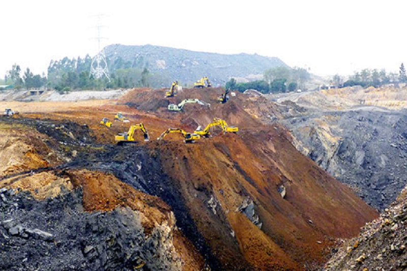

Sử dụng và bảo vệ
tài nguyên thiên nhiên
Lớp 12A18, THPT Hoàng Hoa Thám
Nội dung
- Sử dụng và bảo vệ tài nguyên sinh vật
- Sử dụng và bảo vệ tài nguyên đất
- Sử dụng và bảo vệ tài nguyên khác
Sử dụng và bảo vệ
tài nguyên sinh vật
a. Tài nguyên rừng
* Hiện trạng rừng
- Rừng của nước ta đang được phục hồi.
- Năm 1983 tổng diện tích rừng là 7,2 triệu ha
- Năm 2005 tăng lên thành 12,1 triệu ha.
a. Tài nguyên rừng
* Hiện trạng rừng
Tuy nhiên, tổng diện tích rừng và tỉ lệ che phủ rừngnăm 2005 vẫn thấp hơn năm 1943
- Độ che phủ rừng năm 2005: 38% → còn thấp
- Chất lượng rừng bị giảm sút:
diện tích rừng giàu giảm,
diện tích rừng nghèo và rừng phục hồi tăng chiếm 70%
a. Tài nguyên rừng
* Ý nghĩa của việc bảo vệ tài nguyên rừng
- Về kinh tế: Cung cấp gỗ, làm dược phẩm, phát triển du lịch sinh thái..
- Về môi trường: Chống xói mòn đất; tăng lượng nước ngầm, hạn chế lũ lụt; điều hòa khí quyển...
a. Tài nguyên rừng
* Biện pháp bảo vệ rừng
- Nâng cao độ che phủ rừng từ 38% lên 40-50%, vùng núi dốc đạt 70-80%
- Quy định về quản lí, sử dụng, bảo vệ và phát triển các loại rừng: rừng phòng hộ, rừng đặc dụng, rừng sản xuất.
- Triển khai luật bảo vệ và phát triển rừng, phấn đấu trồng được 5 triệu hecta vào năm 2010.
b. Đa dạng sinh học
* Hiện trạng suy giảm đa dạng sinh học
- Giới sinh vật tự nhiên ở nước ta có tính đa dạng rất cao, biểu hiện ở số lượng thành phần loài, các kiểu hệ sinh thái, nguồn gen quý hiếm.
- Nguy cơ suy giảm rất lớn.
b. Đa dạng sinh học
* Nguyên nhân:
- Khai thác quá mức làm thu hẹp diện tích rừng tự nhiên và làm nghèo tính đa dạng của sinh vật.
- Ô nhiễm môi trường đặc biệt là ô nhiếm nguồn nước làm nguồn thủy sản nước ta bị giảm sút rõ rệt.
b. Đa dạng sinh học
* Biện pháp bảo vệ:
- Xây dựng hệ thống vườn quốc gia và khu bảo tồn thiên nhiên.
- Ban hành “Sách đỏ VN”.
- Quy định khai thác gỗ, động vật, thủy hải sản.
Sử dụng và bảo vệ
tài nguyên đất
a. Hiện trạng sử dụng tài nguyên đất
a. Hiện trạng sử dụng tài nguyên đất
Bình quân đất nông nghiệp/người: 0,1 ha
Khả năng mở rộng diện tích đất nông nghiệp không nhiều
a. Hiện trạng sử dụng tài nguyên đất
Hiện nay, diện tích đất hoang, đồi núi trọc giảm mạnh
nhưng diện tích đất bị suy thoái vẫn rất lớn:
9,3 triệu ha đất bị đe doạ sa mạc hoá chiếm 28%
b. Biện pháp
* Vùng đồi núi:
- Tổ chức định canh định cư.
- Thực hiện phối hợp các biện pháp thuỷ lợi - canh tác; làm ruộng bậc thang, trồng cây theo hàng…
- Bảo vệ rừng và đất rừng.
b. Biện pháp
* Vùng đồng bằng:
- Quản lí chặt chẽ, sử dụng vốn đất hợp lí
- Thâm canh, nâng cao hiệu quả sử dụng đất
- Thực hiện các biện pháp canh tác, cải tạo đất hợp lí.
Sử dụng và bảo vệ
tài nguyên khác
Tài nguyên nước
- Thừa nước gây lũ lụt vào mùa mưa,
- Thiếu nước gây hạn hán vào mùa khô
- Ô nhiễm nguồn nước

Tài nguyên nước
Biện pháp: Trồng rừng và bảo vệ rừng,
tuyên truyền giáo dục người dân không xả nước thải rác thải bừa bãi;
xử lí những cơ sở vi phạm
Tài nguyên khoáng sản
Nhiều nơi khai thác bừa bãi gây lãng phí tài nguyên, ô nhiễm môi trường
Tài nguyên khoáng sản
Biện pháp: Cần quản lí chặt chẽ việc khai thác, xử lí những trường hợp vi phạm
Tài nguyên du lịch
- Ô nhiễm môi trường ở nhiều điểm du lịch
- Một số công trình du lịch bị xuống cấp
Tài nguyên du lịch
Biện pháp: cần bảo vệ môi trường du lịch, bảo tồn tôn tạo
giá trị tài nguyên du lịch, phát triển du lịch sinh thái
Thành viên nhóm
- Hoàng Minh Khang - Soạn thảo nội dung, Thuyết trình
- Nguyễn Tạ Minh Triết - Tổng hợp nội dung, Thiết kế
- Nguyễn Nhật Minh - Thuyết trình
- Nguyễn Phạm Huỳnh Đạt - Thuyết trình
Cảm ơn cô và các bạn đã theo dõi!